3. الملاحق
3.1. إنشاء مشروع ويب باستخدام Visual Studio.NET على Windows XP Home Edition
يتيح لك Visual Studio.NET إنشاء أنواع مختلفة من المشاريع:

لإنشاء مشروع تطبيق ويب، عادةً ما تختار نوع [ASP.NET Web Application]. يتطلب هذا النوع من المشاريع خادم ويب IIS محلي أو بعيد. إذا كنت تعمل على جهاز يعمل بنظام Windows XP، فإن هذا الخادم غير موجود ولا يمكن تثبيته. لذلك، لا يمكنك إنشاء مشروع [ASP.NET Web Application].
يمكنك التغلب على هذه المشكلة بقبول بعض العيوب الطفيفة. ببساطة:
- استخدم خادم الويب Cassini بدلاً من خادم IIS. وهو متاح مجانًا على موقع Microsoft الإلكتروني.
- استخدم مشروع [مكتبة الفئات] بدلاً من مشروع [تطبيق ويب ASP.NET]
لنقم بإنشاء مشروع بسيط لتوضيح كيفية القيام بذلك.
- إنشاء مشروع [مكتبة فئات]
 |  |
- حذف [Class1.vb]
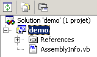
- أضف عنصرًا جديدًا إلى المشروع، من النوع [ملف نصي]، واسمه [demo.aspx]:
 | 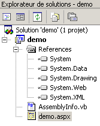 |
- يتم التعرف على ملف [demo.aspx] كصفحة ويب، ويتم ربط محرر صفحات به. يحتوي هذا المحرر على لوحتين:
- [التصميم] لإنشاء الصفحة بشكل رسومي
- [HTML] للوصول إلى كود HTML للصفحة
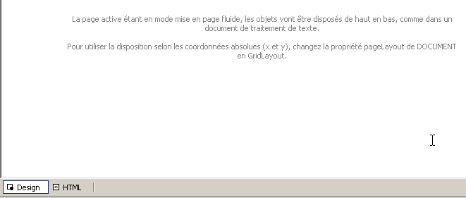
- حدد [عرض/كود] لعرض قسم كود VB للصفحة. لا يحدث شيء. لا يمكنك الوصول إلى كود VB للصفحة.
- انتقل إلى جزء [HTML] وأدخل الكود الذي سيربط صفحة [demo.aspx] بكود [demo.aspx.vb]:

- اطلب عرض كود عنصر التحكم المرتبط بالصفحة عبر [عرض الكود - F7]. سترى ملف [demo.aspx.vb]:

- يتم الآن التعرف على صفحة [demo.aspx] كصفحة ويب [.aspx] مرتبطة بملف [.aspx.vb].
- ارجع إلى جزء [التصميم] في [demo.aspx] وقم بتصميم الصفحة التالية:

تحتوي الصفحة على نص ومكون خادم من النوع [Label] بمعرف [lblHeure].
- انتقل إلى جزء [HTML]. ستجد هناك الكود التالي:
<%@ Page codebehind="demo.aspx.vb" inherits="demo.demo" autoeventwireup="false" Language="vb" %>
Démo ASPX, il est
<asp:Label id="lblHeure" runat="server"></asp:Label>
هذا الرمز غير مكتمل من منظور صيغة HTML. دعونا نكمله:
<%@ Page codebehind="demo.aspx.vb" inherits="demo.demo" autoeventwireup="false" Language="vb" %>
<html>
<head>
<title>démo ASPX</title></head>
<body>
Démo ASPX, il est
<asp:Label id="lblHeure" runat="server"></asp:Label>
</body>
</html>
- لننتقل إلى ملف [demo.aspx.vb] لكتابة كود التحكم الذي سيضبط الوقت في مكون [lblHeure]. نلاحظ أن أداة إكمال الكود IntelliSense لا تتعرف على هذا.
- أغلق [demo.aspx] و [demo.aspx.vb] بعد حفظهما، ثم أعد فتحهما. انتقل إلى الكود في [demo.aspx.vb]. هذه المرة، يتم التعرف على مكون [lblHeure] من [demo.aspx] بواسطة IntelliSense في الكود [demo.aspx.vb]. أكمل الكود:
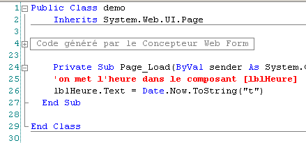
- قم بإنشاء المشروع عن طريق تحديد [Build/Build demo]. إذا نجح الإنشاء، يتم إنشاء ملف DLL في مجلد [bin] الخاص بالمشروع:
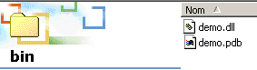
- نحن جاهزون للاختبار. نقوم بتكوين خادم Cassini (انظر الفقرة التالية) على النحو التالي:

يتم تعيين وجهة الاختصار إلى Cassini على النحو التالي:
"E:\Program Files\Microsoft ASP.NET Web Matrix\v0.6.812\WebServer.exe" /path:"D:\temp\07-04-05\demo" /vpath:"/demo"
مسار الملف القابل للتنفيذ | |
مسار مجلد مشروع الويب في Visual Studio | |
المسار الافتراضي المرتبط |
- قم بتشغيل Cassini. سيظهر رمزه في شريط المهام. انقر بزر الماوس الأيمن عليه واختر خيار [إظهار التفاصيل] للتحقق من أن خادم الويب قد تم تكوينه بشكل صحيح:

- باستخدام متصفح، اطلب الصفحة التي أنشأناها عن طريق إدخال عنوان URL [http://localhost/demo/demo.aspx]. نحصل على النتيجة التالية:

لقد نجحنا في إنشاء تطبيق ويب في Visual Studio باستخدام:
- مشروع [مكتبة فئات]
- خادم الويب Cassini
نحن نعرف الآن كيفية إنشاء تطبيقات الويب على أجهزة الكمبيوتر التي لا تحتوي على خادم IIS، مثل أجهزة Windows XP Home Edition.
3.2. أين يمكنك العثور على خادم الويب Cassini؟
للعمل مع منصة .NET من Microsoft، يمكنك استخدام خادم الويب Cassini. وهو متاح من خلال منتج يسمى [WebMatrix]، وهو بيئة تطوير ويب مجانية لمنصات .NET متاحة على الرابط:

اتبع خطوات تثبيت المنتج بعناية:
- قم بتنزيل وتثبيت منصة .NET (الإصدار 1.1 اعتبارًا من مارس 2004)
- قم بتنزيل وتثبيت WebMatrix
- قم بتنزيل وتثبيت MSDE (Microsoft Data Engine)، وهو إصدار محدود من SQL Server.
بمجرد اكتمال التثبيت، يصبح منتج [WebMatrix] متاحًا في قائمة البرامج المثبتة:

يؤدي رابط [ASP.NET] Web Matrix إلى تشغيل بيئة تطوير ASP.NET:

يؤدي الرابط [Class Browser] إلى تشغيل أداة لاستكشاف فئات .NET:

لاختبار التثبيت، دعونا نطلق [WebMatrix]:
 |
عند التشغيل الأولي، يطلب منك [WebMatrix] تحديد مواصفات المشروع الجديد. هذا هو التكوين الافتراضي له. يمكنك تكوينه بحيث لا يظهر مربع الحوار هذا عند التشغيل. يمكنك بعد ذلك الوصول إليه عبر خيار [ملف/ملف جديد]. يتيح لك [WebMatrix] إنشاء قوالب لمختلف تطبيقات الويب. أعلاه، حددنا في (1) أننا نريد إنشاء تطبيق [ASP.NET Page]، وهو عبارة عن صفحة ويب. في (2)، نحدد المجلد الذي سيتم وضع صفحة الويب هذه فيه. في (3)، ندخل اسم الصفحة. يجب أن يكون لها امتداد .aspx. أخيرًا، في (4)، نحدد أننا نريد العمل بلغة VB.NET؛ يدعم [WebMatrix] أيضًا لغتي C# و J#. بمجرد الانتهاء من ذلك، يعرض [WebMatrix] صفحة تحرير لملف [demo1.aspx]. ندخل الكود التالي هناك:

- تتيح لك علامة التبويب [التصميم] "تصميم" صفحة الويب التي ترغب في إنشائها. وتعمل هذه العلامة بشكل مشابه لبيئة تطوير التطبيقات (IDE) في نظام ويندوز.
- سيؤدي التصميم الرسومي لصفحة الويب في [التصميم] إلى إنشاء كود HTML في علامة التبويب [HTML]
- قد تحتوي صفحة الويب على عناصر تحكم تولد أحداثًا تتطلب استجابة، مثل الزر. سيتم التعامل مع هذه الأحداث بواسطة كود VB.NET الموجود في علامة التبويب [Code]
- في النهاية، يعد ملف demo1.aspx ملفًا نصيًا يجمع بين كود HTML وكود VB.NET، ناتجًا عن التصميم الرسومي الذي تم إنشاؤه في [التصميم]، وكود HTML الذي تمت إضافته يدويًا في [HTML]، وكود VB.NET الموجود في [الكود]. يتوفر الملف بأكمله في علامة التبويب [الكل].
- يمكن لمطور ASP.NET ذي الخبرة إنشاء ملف demo1.aspx مباشرةً باستخدام محرر نصوص دون الحاجة إلى أي بيئة تطوير متكاملة (IDE).
دعونا نختار الخيار [All]. يمكننا أن نرى أن [WebMatrix] قد أنشأ بالفعل بعض التعليمات البرمجية:
<%@ Page Language="VB" %>
<script runat="server">
' Insert page code here
'
</script>
<html>
<head>
</head>
<body>
<form runat="server">
<!-- Insert content here -->
</form>
</body>
</html>
لن نحاول شرح هذا الكود هنا. سنقوم بتحويله على النحو التالي:
<html>
<head>
<title>Démo asp.net </title>
</head>
<body>
Il est <% =Date.Now.ToString("hh:mm:ss") %>
</body>
</html>
الرمز أعلاه هو مزيج من HTML ورمز VB.NET. وقد تم وضعه داخل علامات <% ... %>. لتشغيل هذا الرمز، نستخدم الخيار [View/Start]. ثم يقوم [WebMatrix] بتشغيل خادم الويب Cassini إذا لم يكن قيد التشغيل بالفعل

يمكنك قبول القيم الافتراضية المعروضة في مربع الحوار هذا واختيار الخيار [Start]. عندئذٍ يصبح خادم الويب نشطًا. سيقوم [WebMatrix] بعد ذلك بتشغيل المتصفح الافتراضي على الجهاز الذي يعمل عليه وطلب عنوان URL http://localhost:8080/demo1.aspx:

من الممكن استخدام خادم Cassini خارج [WebMatrix]. يوجد الملف القابل للتنفيذ للخادم في <WebMatrix>\<version>\WebServer.exe، حيث <WebMatrix> هو دليل تثبيت [WebMatrix] و<version> هو رقم إصداره:

افتح نافذة موجه الأوامر وانتقل إلى مجلد خادم Cassini:
E:\Program Files\Microsoft ASP.NET Web Matrix\v0.6.812>dir
...
29/05/2003 11:00 53 248 WebServer.exe
...
دعونا نقوم بتشغيل [WebServer.exe] بدون أي معلمات:
تظهر لنا نافذة المساعدة:

يقبل تطبيق [WebServer]، المعروف أيضًا باسم خادم الويب Cassini، ثلاث معلمات:
- /port: رقم منفذ خدمة الويب. يمكن أن يكون أي رقم. القيمة الافتراضية هي 80
- /path: المسار الفعلي لمجلد على القرص
- /vpath: المجلد الافتراضي المرتبط بالمجلد الفعلي السابق. لاحظ أن الصيغة ليست /path=path بل /vpath:path، على عكس ما هو مذكور في [المثال] في لوحة المساعدة أعلاه.
لنضع الملف [demo1.aspx] في المجلد التالي:

دعونا نربط المجلد الظاهري [/webmatrix] بالمجلد الفعلي [d:\data\devel\webmatrix]. يمكن تشغيل خادم الويب على النحو التالي:
E:\Program Files\Microsoft ASP.NET Web Matrix\v0.6.812>webserver /port:100 /path:"d:\data\devel\webmatrix" /vpath:"/webmatrix"
أصبح خادم Cassini نشطًا الآن، ويظهر رمزه في شريط المهام. إذا نقرت عليه نقرًا مزدوجًا:

سترى إعدادات بدء تشغيل الخادم. كما يتوفر لديك خيار إيقاف [Stop] أو إعادة تشغيل [Restart] خادم الويب. إذا نقرت على رابط [Root URL]، فسيتم فتح جذر شجرة دليل الويب الخاص بالخادم في المتصفح:

اتبع رابط [demos]:

ثم رابط [demo1.aspx]:

يمكننا أن نرى أنه إذا تم تعيين المجلد الفعلي P=[d:\data\devel\webmatrix] إلى المجلد الظاهري V=[/webmatrix] وكان الخادم يعمل على المنفذ 100، فإن صفحة الويب [demo1.aspx]، الموجودة فعليًا في [P\demos]، ستكون متاحة محليًا عبر عنوان URL [http://localhost:100/V/demos/demo1.aspx].
لتجنب الحاجة إلى استخدام نافذة DOS لتشغيل خادم Cassini، يمكنك إنشاء اختصار لملف الخادم القابل للتنفيذ بخصائص مشابهة لما يلي:

"C:\Program Files\Microsoft ASP.NET Web Matrix\v0.6.812\WebServer.exe" /port:80 /path:"D:\data\serge\work\2004-2005\aspnet\webarticles-010405\version3\web" /vpath:"/webarticles" | |
"C:\Program Files\Microsoft ASP.NET Web Matrix\v0.6.812" |
3.3. أين يمكنني العثور على Spring؟
الموقع الرئيسي لـ Spring هو [http://www.springframework.org/]. هذا هو الموقع الخاص بإصدار Java. أما إصدار .NET قيد التطوير حاليًا (أبريل 2005) فهو متاح على [http://www.springframework.net/].

موقع التنزيل موجود على [SourceForge]:

بمجرد تنزيل ملف zip أعلاه، قم بفك ضغطه:

في هذا المستند، لم نستخدم سوى محتويات مجلد [bin]:

في مشروع Visual Studio الذي يستخدم Spring، يجب عليك دائمًا القيام بأمرين:
- وضع الملفات المذكورة أعلاه في مجلد [bin] الخاص بالمشروع
- إضافة مرجع إلى تجميع [Spring.Core.dll] إلى المشروع
3.4. أين يمكنك العثور على NUnit؟
الموقع الإلكتروني الرئيسي لـ NUnit هو [http://www.nunit.org/]. الإصدار المتاح في أبريل 2005 هو 2.2.0:

قم بتنزيل هذا الإصدار وتثبيته. يؤدي التثبيت إلى إنشاء مجلد يحتوي على واجهة الاختبار الرسومية:
الجزء المثير للاهتمام موجود في مجلد [bin]:


يشير السهم أعلاه إلى أداة الاختبار الرسومية. أضاف التثبيت أيضًا عناصر جديدة إلى مستودع تجميع Visual Studio، والتي سنستكشفها الآن.
لنقم بإنشاء مشروع Visual Studio التالي:

توجد الفئة قيد الاختبار في [Person.vb]:
Public Class Personne
' private fields
Private _nom As String
Private _age As Integer
' default builder
Public Sub New()
End Sub
' properties associated with private fields
Public Property nom() As String
Get
Return _nom
End Get
Set(ByVal Value As String)
_nom = Value
End Set
End Property
Public Property age() As Integer
Get
Return _age
End Get
Set(ByVal Value As Integer)
_age = Value
End Set
End Property
' identity chain
Public Overrides Function tostring() As String
Return String.Format("[{0},{1}]", nom, age)
End Function
' init method
Public Sub init()
Console.WriteLine("init personne {0}", Me.ToString)
End Sub
' close method
Public Sub close()
Console.WriteLine("destroy personne {0}", Me.ToString)
End Sub
End Class
توجد فئة الاختبار في [NunitTestPersonne-1.vb]:
Imports System
Imports NUnit.Framework
<TestFixture()> _
Public Class NunitTestPersonne
' object tested
Private personne1 As Personne
<SetUp()> _
Public Sub init()
' create an instance of Person
personne1 = New Personne
' log
Console.WriteLine("setup test")
End Sub
<Test()> _
Public Sub demo()
' log screen
Console.WriteLine("début test")
' init person1
With personne1
.nom = "paul"
.age = 10
End With
' tests
Assert.AreEqual("paul", personne1.nom)
Assert.AreEqual(10, personne1.age)
' log screen
Console.WriteLine("fin test")
End Sub
<TearDown()> _
Public Sub destroy()
' follow-up
Console.WriteLine("teardown test")
End Sub
End Class
هناك عدة أمور يجب ملاحظتها:
- يتم تعيين سمات للطرق مثل <Setup()> و<TearDown()>، ...
- لكي يتم التعرف على هذه السمات، يجب أن يكون ما يلي صحيحًا:
- يجب أن يشير المشروع إلى التجميع [nunit.framework.dll]
- تستورد فئة الاختبار مساحة الاسم [NUnit.Framework]
تتم إضافة المرجع بالنقر بزر الماوس الأيمن على [References] في مستكشف الحلول:
 |  |

يجب أن يكون التجميع [nunit.framework.dll] موجودًا في القائمة إذا تم تثبيت [NUnit] بنجاح. ما عليك سوى النقر المزدوج على التجميع لإضافته إلى المشروع:
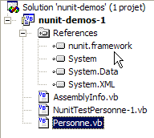
بمجرد الانتهاء من ذلك، يجب أن تستورد فئة الاختبار [NunitTestPersonne] مساحة الاسم [NUnit.Framework]:
ثم يجب التعرف على سمات فئة الاختبار [NunitTestPersonne].
- تحدد السمة <Test()> الطريقة المراد اختبارها
- تحدد السمة <Setup()> الطريقة التي سيتم تنفيذها قبل كل طريقة يتم اختبارها
- تحدد السمة <TearDown()> الطريقة التي سيتم تنفيذها بعد كل طريقة يتم اختبارها
- تسمح لك طريقة Assert.AreEqual باختبار تساوي كيانين. هناك العديد من الطرق الأخرى من النوع Assert.xx.
- توقف أداة NUnit تنفيذ الطريقة التي يتم اختبارها بمجرد فشل طريقة [Assert] وتعرض رسالة خطأ. وإلا، فإنها تعرض رسالة نجاح.
دعونا نُهيئ مشروعنا لإنشاء مكتبة DLL:

سيتم تسمية ملف DLL الذي تم إنشاؤه [nunit-demos-1.dll] وسيتم وضعه افتراضيًا في مجلد [bin] الخاص بالمشروع. لنقم ببناء مشروعنا. نحصل على ما يلي في مجلد [bin]:

الآن دعونا نطلق أداة الاختبار الرسومية NUnit. تذكر أنها موجودة في <Nunit>\bin واسمها [nunit-gui.exe]. يشير <Nunit> إلى مجلد تثبيت [Nunit]. تظهر الواجهة التالية:

دعونا نستخدم خيار القائمة [File/Open] لتحميل ملف DLL [nunit-demos-1.dll] من مشروعنا:

يمكن لـ [Nunit] اكتشاف فئات الاختبار الموجودة في ملف DLL الذي تم تحميله تلقائيًا. هنا، يجد الفئة [NunitTestPersonne]. ثم يعرض جميع أساليب الفئة التي تحتوي على السمة <Test()>. يتيح لك الزر [Run] تشغيل الاختبارات على الكائن المحدد. إذا كانت هذه هي الفئة [NunitTestPersonne]، فسيتم اختبار جميع الأساليب المعروضة. يمكنك اختبار طريقة معينة عن طريق تحديدها والنقر على [Run]. دعونا نقوم بتشغيل الفئة:

يُشار إلى نجاح الاختبار على طريقة ما بنقطة خضراء بجوار الطريقة في النافذة اليسرى. ويُشار إلى فشل الاختبار بنقطة حمراء.
تعرض نافذة [Console.Out] على اليمين مخرجات الشاشة الناتجة عن الطرق التي تم اختبارها. هنا، أردنا متابعة تقدم الاختبار:
- يُظهر السطر 1 أن طريقة السمة <Setup()> يتم تنفيذها قبل الاختبار
- يتم إنشاء السطرين 2 و3 بواسطة الطريقة [demo] التي يتم اختبارها (انظر الكود أعلاه)
- يُظهر السطر 4 أن طريقة السمة <TearDown()> يتم تنفيذها بعد الاختبار
3.5. أين يمكنني العثور على نظام إدارة قواعد البيانات Firebird ؟
الموقع الإلكتروني الرئيسي لـ Firebird هو [http://firebird.sourceforge.net/]. توفر صفحة التنزيلات الروابط التالية (أبريل 2005):

ستقوم بتنزيل العناصر التالية:
نظام إدارة قواعد البيانات لـ Windows | |
مكتبة فئات لتطبيقات .NET تتيح الوصول إلى نظام إدارة قواعد البيانات دون استخدام برنامج تشغيل ODBC. | |
برنامج تشغيل Firebird ODBC |
قم بتثبيت هذه المكونات. يتم تثبيت نظام إدارة قواعد البيانات (DBMS) في مجلد يحتوي على محتويات مشابهة لما يلي:

توجد الملفات الثنائية في مجلد [bin]:

يسمح لك بتشغيل/إيقاف نظام إدارة قواعد البيانات | |
عميل سطر الأوامر لإدارة قواعد البيانات |
لاحظ أنه بشكل افتراضي، يُسمى مسؤول نظام إدارة قواعد البيانات [SYSDBA] وكلمة المرور هي [masterkey]. تمت إضافة قوائم إلى [ابدأ]:

يتيح لك خيار [Firebird Guardian] تشغيل/إيقاف نظام إدارة قواعد البيانات. بعد التشغيل، يظل رمز نظام إدارة قواعد البيانات في شريط مهام Windows:
 |
لإنشاء قواعد بيانات Firebird وإدارتها باستخدام عميل سطر الأوامر [isql.exe]، يجب عليك قراءة الوثائق المرفقة مع المنتج في المجلد [doc]. هناك طريقة أسرع للعمل مع Firebird وهي استخدام عميل رسومي. أحد هذه العملاء هو IB-Expert، الموصوف في القسم التالي.
3.6. أين يمكنني العثور على IB- Expert؟
الموقع الإلكتروني الرئيسي لـ Firebird هو [http://www.ibexpert.com/]. توفر صفحة التنزيلات الروابط التالية:

حدد الإصدار المجاني [Personal Edition]. بمجرد تنزيله وتثبيته، سيكون لديك مجلد مشابه لما يلي:

الملف القابل للتنفيذ هو [ibexpert.exe]. عادةً ما يتوفر اختصار في قائمة [Start]:

بمجرد تشغيله، يعرض IBExpert النافذة التالية:

استخدم خيار [Database/Create Database] لإنشاء قاعدة بيانات:

يمكن أن يكون [محلي] أو [بعيد]. هنا، يقع الخادم الخاص بنا على نفس الجهاز الذي يعمل عليه [IBExpert]. لذا نختار [محلي] | |
استخدم زر [المجلد] في القائمة المنسدلة لتحديد ملف قاعدة البيانات. يقوم Firebird بتخزين قاعدة البيانات بأكملها في ملف واحد. هذه إحدى مزاياه. يمكنك نقل قاعدة البيانات من جهاز كمبيوتر إلى آخر بمجرد نسخ الملف. تتم إضافة اللاحقة [.gdb] تلقائيًا. | |
SYSDBA هو المسؤول الافتراضي لتوزيعات Firebird الحالية | |
masterkey هي كلمة مرور المسؤول SYSDBA في إصدارات Firebird الحالية | |
لهجة SQL المراد استخدامها | |
إذا تم تحديد هذا المربع، فسيعرض IBExpert رابطًا إلى قاعدة البيانات بعد إنشائها |
إذا ظهرت لك الرسالة التالية عند النقر على زر [موافق] لإنشاء قاعدة البيانات:
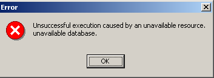
فهذا يعني أنك لم تقم بتشغيل Firebird. قم بتشغيله. ستظهر نافذة جديدة:

[IBExpert] يمكنه إدارة أنظمة إدارة قواعد البيانات المختلفة المشتقة من Interbase. حدد إصدار Firebird الذي قمت بتثبيته |

بمجرد تأكيد هذه النافذة الجديدة بالنقر فوق [تسجيل]، ستظهر النتيجة التالية:

للوصول إلى قاعدة البيانات التي تم إنشاؤها، ما عليك سوى النقر مرتين على الرابط الخاص بها. سيقوم IBExpert بعد ذلك بعرض شجرة تتيح الوصول إلى خصائص قاعدة البيانات:

لنقم بإنشاء جدول. انقر بزر الماوس الأيمن على [Tables] واختر خيار [New Table]. ستظهر نافذة تعريف خصائص الجدول:
 |
لنبدأ بتسمية الجدول [ARTICLES] باستخدام حقل الإدخال [1]:
 |
استخدم حقل الإدخال [2] لتعريف مفتاح أساسي [ID]:
 |
يتم تعيين حقل كمفتاح أساسي بالنقر المزدوج على حقل [PK] (المفتاح الأساسي). دعونا نضيف حقولًا باستخدام الزر [3]:
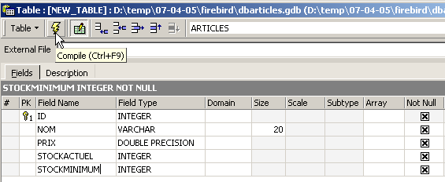
لن يتم إنشاء الجدول حتى ننتهي من "تجميع" تعريفه. استخدم زر [تجميع] أعلاه لإنهاء تعريف الجدول. يقوم IBExpert بإعداد استعلامات SQL لإنشاء الجدول ويطلب منك التأكيد:

ومن المثير للاهتمام أن IBExpert يعرض استعلامات SQL التي نفذها. وهذا يتيح لك تعلم لغة SQL وأي لهجة SQL خاصة قد يتم استخدامها. يقوم زر [Commit] بالتحقق من صحة المعاملة الحالية، بينما يقوم زر [Rollback] بإلغائها. هنا، نقبلها بالنقر فوق [Commit]. وبمجرد الانتهاء من ذلك، يضيف IBExpert الجدول الذي تم إنشاؤه إلى شجرة قاعدة البيانات لدينا:

بالنقر المزدوج على الجدول، يمكننا الوصول إلى خصائصه:

تسمح لنا لوحة [Constraints] بإضافة قيود تكامل جديدة إلى الجدول. لنفتحها:

نرى قيد المفتاح الأساسي الذي أنشأناه. يمكننا إضافة قيود أخرى:
- المفاتيح الخارجية [Foreign Keys]
- قيود سلامة الحقول [التحقق]
- قيود تفرد الحقول [Uniques]
لاحظ أن:
- يجب أن تكون الحقول [ID، PRICE، CURRENTSTOCK، MINIMUMSTOCK] أكبر من 0
- يجب أن يكون حقل [NAME] غير فارغ وفريد
افتح لوحة [Checks] وانقر بزر الماوس الأيمن في منطقة تعريف القيد لإضافة قيد جديد:

دعونا نحدد القيود المطلوبة:

لاحظ أعلاه أن القيد [NAME<>''] يستخدم علامتي اقتباس مفردة، وليس علامتي اقتباس مزدوجة. قم بتجميع هذه القيود باستخدام الزر [Compile] أعلاه:

مرة أخرى، يثبت IBExpert سهولة استخدامه من خلال عرض استعلامات SQL التي نفذها. الآن دعونا ننتقل إلى لوحة [Constraints/Unique] لتحديد أن الاسم يجب أن يكون فريدًا:

دعونا نحدد القيد:

لنقوم بتجميعه. بمجرد الانتهاء من ذلك، افتح لوحة [DDL] للجدول [ARTICLES]:

تعرض هذه اللوحة كود SQL لإنشاء الجدول مع جميع قيوده. يمكنك حفظ هذا الكود في نص برمجي لتشغيله لاحقًا:
SET SQL DIALECT 3;
SET NAMES NONE;
CREATE TABLE ARTICLES (
ID INTEGER NOT NULL,
NOM VARCHAR(20) NOT NULL,
PRIX DOUBLE PRECISION NOT NULL,
STOCKACTUEL INTEGER NOT NULL,
STOCKMINIMUM INTEGER NOT NULL
);
ALTER TABLE ARTICLES ADD CONSTRAINT CHK_ID check (ID>0);
ALTER TABLE ARTICLES ADD CONSTRAINT CHK_PRIX check (PRIX>0);
ALTER TABLE ARTICLES ADD CONSTRAINT CHK_STOCKACTUEL check (STOCKACTUEL>0);
ALTER TABLE ARTICLES ADD CONSTRAINT CHK_STOCKMINIMUM check (STOCKMINIMUM>0);
ALTER TABLE ARTICLES ADD CONSTRAINT CHK_NOM check (NOM<>'');
ALTER TABLE ARTICLES ADD CONSTRAINT UNQ_NOM UNIQUE (NOM);
ALTER TABLE ARTICLES ADD CONSTRAINT PK_ARTICLES PRIMARY KEY (ID);
حان الوقت الآن لإدخال البيانات في جدول [ARTICLES]. للقيام بذلك، استخدم لوحة [Data]:

يتم إدخال البيانات بالنقر المزدوج على حقول الإدخال في كل صف من الجدول. تضاف صفوف جديدة باستخدام الزر [+]، ويتم حذف الصفوف باستخدام الزر [-]. يتم تنفيذ هذه العمليات ضمن معاملة يتم تثبيتها باستخدام الزر [Commit Transaction]. بدون هذا التثبيت، ستفقد البيانات.
يتيح لك IBExpert تشغيل استعلامات SQL عبر خيار [Tools/SQL Editor] أو [F12]. يمنحك هذا إمكانية الوصول إلى محرر استعلامات SQL متقدم حيث يمكنك تشغيل الاستعلامات. يتم حفظها، بحيث يمكنك العودة إلى استعلام قمت بتشغيله بالفعل. إليك مثال على ذلك:

نقوم بتنفيذ استعلام SQL باستخدام الزر [Execute] أعلاه. نحصل على النتيجة التالية:
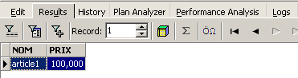
سنوقف عروضنا التوضيحية هنا. أثبتت مجموعة IBExpert-Firebird أنها ممتازة لتعلم قواعد البيانات.
3.7. تثبيت واستخدام برنامج تشغيل ODBC لـ [Firebird]
3.8. تثبيت برنامج التشغيل
يتيح الرابط [firebird-odbc-provider] الموجود في صفحة تنزيلات [Firebird] (القسم 3.5) الوصول إلى برنامج تشغيل ODBC. وبمجرد تثبيته، يظهر في قائمة برامج تشغيل ODBC المثبتة.
3.9. إنشاء مصدر بيانات ODBC
- قم بتشغيل الأداة [ابدأ -> إعدادات -> أداة التكوين -> أدوات إدارية -> مصادر بيانات ODBC]:

- تظهر النافذة التالية:

- انقر فوق [إضافة] لإضافة مصدر بيانات نظام جديد (في جزء [DSN النظام]) سنربطه بقاعدة بيانات Firebird التي أنشأناها في القسم السابق:

- أولاً، نحتاج إلى تحديد برنامج تشغيل ODBC الذي سنستخدمه. أعلاه، نختار برنامج تشغيل Firebird ثم نضغط على [إنهاء]. بعد ذلك، يتولى معالج برنامج تشغيل Firebird ODBC المهمة:
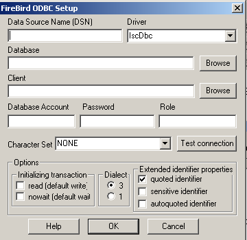
- نقوم بملء الحقول المختلفة:

اسم DSN لمصدر ODBC — يمكن أن يكون أي شيء | |
اسم قاعدة بيانات Firebird المراد استخدامها — استخدم [Browse] لاختيار ملف .gbd المقابل | |
اسم المستخدم الذي سيتم استخدامه للاتصال بقاعدة البيانات | |
كلمة المرور المرتبطة باسم المستخدم هذا |
يتيح لك زر [اختبار الاتصال] التحقق من صحة المعلومات التي أدخلتها. قبل استخدامه، قم بتشغيل نظام إدارة قواعد البيانات [Firebird]:

- قم بتأكيد معالج ODBC بالنقر فوق [موافق] عدة مرات حسب الضرورة
3.10. اختبر مصدر ODBC
هناك طرق مختلفة للتحقق من أن مصدر ODBC يعمل بشكل صحيح. هنا، سنستخدم Excel:

- استخدم الخيار [بيانات -> بيانات خارجية -> إنشاء استعلام] أعلاه. سيؤدي ذلك إلى فتح النافذة الأولى لمعالج تعريف مصدر البيانات. يعرض جزء [قواعد البيانات] قائمة بمصادر ODBC المحددة حاليًا على الجهاز:
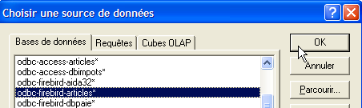
- حدد مصدر ODBC [odbc-firebird-articles] الذي أنشأناه للتو وانتقل إلى الخطوة التالية بالنقر فوق [موافق]:

- تسرد هذه النافذة الجداول والأعمدة المتاحة في مصدر ODBC. سنختار الجدول بأكمله:

- انتقل إلى الخطوة التالية بالنقر فوق [Next]:
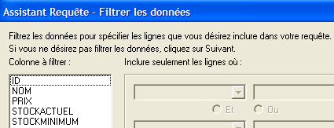
- تسمح لنا هذه الخطوة بتصفية البيانات. هنا، لن نقوم بتصفية أي شيء وسنتابع إلى الخطوة التالية:

- تسمح لنا هذه الخطوة بفرز البيانات. لن نقوم بذلك وسننتقل إلى الخطوة التالية:

- تسألنا الخطوة الأخيرة عما نريد أن نفعله بالبيانات. هنا، نقوم بتصديرها إلى Excel:
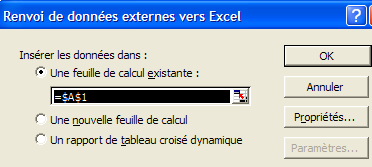
- هنا، يسألنا Excel عن المكان الذي نريد وضع البيانات المسترجعة فيه. نضعها في الورقة النشطة بدءًا من الخلية A1. ثم يتم استرجاع البيانات في ورقة Excel:
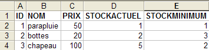
هناك طرق أخرى لاختبار صحة مصدر ODBC. على سبيل المثال، يمكنك استخدام مجموعة برامج OpenOffice المجانية المتوفرة على [http://www.openoffice.org]. فيما يلي مثال على استخدام OpenOffice:
 |  |
- يوفر رمز موجود على الجانب الأيسر من نافذة OpenOffice إمكانية الوصول إلى مصادر البيانات. ثم تتغير الواجهة لتعرض منطقة إدارة مصادر البيانات:

- يوجد مصدر بيانات واحد محدد مسبقًا: مصدر [Bibliography]. النقر بزر الماوس الأيمن على منطقة مصادر البيانات يتيح لك إنشاء مصدر جديد باستخدام خيار [Manage Data Sources]:

- يتيح لك معالج [إدارة مصادر البيانات] إنشاء مصادر بيانات. النقر بزر الماوس الأيمن على منطقة مصادر البيانات يتيح لك إنشاء مصدر جديد باستخدام خيار [مصدر بيانات جديد]:
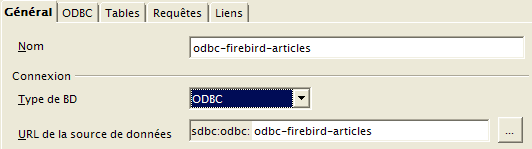
أي اسم. هنا استخدمنا اسم مصدر ODBC | |
يدعم OpenOffice أنواعًا مختلفة من قواعد البيانات عبر JDBC أو ODBC أو مباشرة (MySQL و Dbase وغيرها). في مثالنا هذا، حدد ODBC | |
يتيح لنا الزر الموجود على يمين حقل الإدخال الوصول إلى قائمة مصادر ODBC الموجودة على الجهاز. نختار المصدر [odbc-firebird-articles] |
- ننتقل إلى لوحة [ODBC] لتحديد المستخدم الذي سيتم إجراء الاتصال باستخدام بيانات اعتماده:

مالك مصدر ODBC |
- انتقل إلى لوحة [Tables]. سيُطلب منك إدخال كلمة المرور. هنا، هي [masterkey]:

- انقر فوق [موافق]. ثم يتم عرض قائمة الجداول الموجودة في مصدر ODBC:

- يمكنك تحديد الجداول التي سيتم عرضها في مستند [OpenOffice]. هنا، نحدد الجدول [ARTICLES] ونضغط على [موافق]. يكون تعريف مصدر البيانات قد اكتمل. ثم يظهر في قائمة مصادر البيانات للمستند النشط:

- يمكنك سحب الجدول [ARTICLES] من الأعلى إلى مستند [OpenOffice] باستخدام الماوس:

3.11. سلسلة الاتصال لمصدر Firebird ODBC
- قم بتشغيل Visual Studio وافتح مستكشف الخادم [View/Server Explorer]:
 |
- انقر بزر الماوس الأيمن على [Data Connection] واختر خيار [Add Connection]:

- في لوحة [المزود]، حدد أنك تريد استخدام مصدر ODBC (انظر أعلاه)، ثم انتقل إلى لوحة [الاتصال]:

حدد مصدر ODBC من القائمة المنسدلة. يجب أن يظهر المصدر الذي أنشأته للتو. إذا لزم الأمر، استخدم [تحديث] لتحديث قائمة مصادر ODBC. | |
اسم المستخدم الذي سيتم استخدامه للاتصال بقاعدة البيانات | |
كلمة المرور المرتبطة باسم المستخدم هذا |
وهنا أيضًا، يتيح لك زر [اختبار الاتصال] التحقق من صحة المعلومات:

- أكد المعالج بالنقر فوق [موافق]. ثم يظهر مصدر البيانات في نافذة [مستكشف الخادم] في Visual Studio:
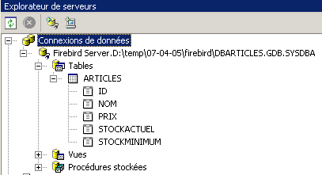
- بالنقر المزدوج على الجدول [ARTICLES]، يمكنك الوصول إلى بيانات الجدول:
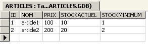
- إذا نقرنا بزر الماوس الأيمن على الرابط [Firebird Server D:\temp\... ] واخترنا الخيار [Properties]، يمكننا الوصول إلى خصائص الاتصال:

- تعد [ConnectString] خاصية مهمة يجب معرفتها لأن كود .NET يحتاجها لفتح اتصال بالقاعدة البيانات. هنا، سلسلة الاتصال هي:
Provider=MSDASQL.1;Persist Security Info=False;User ID=SYSDBA;Data Source=demo-odbc-firebird;Extended Properties="DSN=demo-odbc-firebird;Driver=Firebird/InterBase(r) driver;Dbname=D:\temp\07-04-05\firebird\DBARTICLES.GDB;CHARSET=NONE;UID=SYSDBA"
تحتوي العديد من عناصر سلسلة الاتصال هذه على قيم افتراضية. وستكفي سلسلة الاتصال التالية:
وبهذا نختتم نظرة عامة على برنامج تشغيل ODBC [Firebird].
3.12. أين يمكنك العثور على MSDE ؟
MSDE هو الإصدار المجاني من نظام إدارة قواعد البيانات SQL Server من Microsoft. يمكن العثور عليه على الرابط [http://www.microsoft.com/sql/msde/downloads/download.asp]:
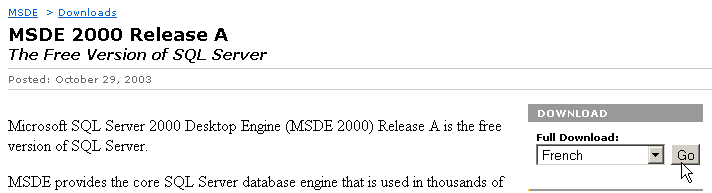 |
 |  |
قم بتنزيل ملف التثبيت، ثم قم بتثبيت نظام إدارة قواعد البيانات (DBMS) بالنقر المزدوج على الملف القابل للتنفيذ الذي تم تنزيله. ستظهر نافذة تطلب منك تحديد مجلد التثبيت. العنوان مضلل. هذا مجلد مؤقت يمكن حذفه لاحقًا:
 |  |
اقرأ ملف [ReadmeMSDE2000A.htm] بعناية. المثبت هو [setup.exe] أعلاه. يتم تشغيله من سطر الأوامر بحيث يمكنك تمرير المعلمات إليه. أهمها كما يلي:
الوصف | |
| يحدد كلمة مرور قوية لتعيينها إلى تسجيل دخول المسؤول "sa". |
| يحدد اسم المثيل. إذا لم يتم تحديد INSTANCENAME، يقوم المثبت بتثبيت مثيل افتراضي. |
المعلمات الأخرى التي تُستخدم غالبًا لتخصيص التثبيت هي:
الوصف | |
يحدد ما إذا كانت المثيل ستقبل اتصالات الشبكة من التطبيقات التي تعمل على أجهزة كمبيوتر أخرى. بشكل افتراضي، أو إذا حددت DISABLENETWORKPROTOCOLS=1، يقوم المثبت بتكوين المثيل لرفض اتصالات الشبكة. حدد DISABLENETWORKPROTOCOLS=0 لتمكين اتصالات الشبكة. | |
يحدد أنه يجب تثبيت المثيل في الوضع المختلط، مما يعني أن المثيل يدعم كل من مصادقة Windows ومصادقة SQL للاتصالات | |
| يحدد المجلد الذي يقوم المثبت بتثبيت قواعد بيانات النظام وسجلات الأخطاء وبرامج التثبيت النصية فيه. يجب أن تنتهي القيمة المحددة لـ data_folder_path بشرطة مائلة عكسية (\). بالنسبة للمثيل الافتراضي، يضيف المثبت MSSQL\ إلى القيمة المحددة. بالنسبة للمثيل المسمى، يضيف المثبت MSSQL$InstanceName\، حيث InstanceName هي القيمة المحددة عبر المعلمة INSTANCENAME. يقوم المثبت بإنشاء ثلاثة مجلدات في الموقع المحدد: مجلد Data ومجلد Log ومجلد Script. |
| يحدد المجلد الذي يقوم المثبت بتثبيت ملفات MSDE 2000 القابلة للتنفيذ فيه. يجب أن تنتهي القيمة المحددة لـ executable_folder_path بشرطة مائلة عكسية (\). بالنسبة للمثيل الافتراضي، يضيف المثبت MSSQL\Binn إلى القيمة المحددة. بالنسبة للمثيل المسمى، يضيف المثبت MSSQL$InstanceName\Binn، حيث InstanceName هي القيمة المحددة عبر المعلمة INSTANCENAME. |
بعد قراءة توصيات التثبيت أعلاه، انتقل إلى المجلد الذي تم استخراج ملفات التثبيت إليه وأدخل الأمر DOS التالي (باستخدام نظام إدارة قواعد البيانات دون شبكة):
- INSTANCENAME="MSDE140405" - سيكون هذا هو اسم مثيل MSDE الخاص بنا. يمكنك تثبيت مثيلات متعددة.
- SECURITYMODE=SQL - سيتم تشغيل نظام إدارة قواعد البيانات (DBMS) في وضع المصادقة المختلطة. يتيح لك ذلك الاتصال بـ MSDE بطريقتين:
- باستخدام حساب مسؤول Windows
- باستخدام حساب MSDE — وفي هذه الحالة، يلزم إدخال اسم المستخدم وكلمة المرور. هذا هو الوضع الذي يجب استخدامه في البرنامج الذي يتصل بقاعدة البيانات.
- SAPWD="azerty" - ستكون هذه كلمة المرور لمستخدم نظام إدارة قواعد البيانات [sa]. يتمتع المستخدم [sa] بحقوق إدارية على نظام إدارة قواعد البيانات.
لاستخدام نظام إدارة قواعد البيانات (DBMS) على شبكة، عليك إصدار الأمر التالي:
برنامج التثبيت بسيط للغاية ويكتمل دون أي مخرجات... ومع ذلك، يمكنك التحقق من تثبيت نظام إدارة قواعد البيانات (DBMS) عبر الخيار [قائمة ابدأ -> لوحة التحكم -> إضافة أو إزالة البرامج]:

يتم التثبيت عادةً في C:\Program Files\Microsoft SQL Server\MSSQL$instanceName:
 |  |
في المجلد [LOG] الموجود داخل دليل التثبيت، ستجد ملف السجل الخاص بمرحلة تثبيت نظام إدارة قواعد البيانات (DBMS). ويحتوي هذا الملف على معلومة مهمة، وهي اسم مثيل MSDE:
من المهم معرفة هذا الاسم لأن جميع عملاء DBMS سيحتاجون إليه. إذا كانت هذه السجلات مفقودة، يمكنك العثور على اسم خادم MSDE، وهو [windows_machine\MSDE_instance_name]. يتوفر اسم الجهاز في عدة أماكن. على سبيل المثال:
- انقر بزر الماوس الأيمن فوق [جهاز الكمبيوتر] على سطح المكتب، وحدد [خصائص]، ثم علامة التبويب [اسم الكمبيوتر]:
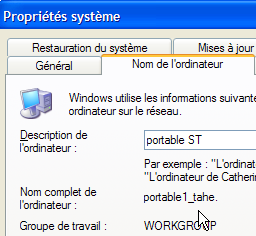
ما زلنا لا نعرف كيفية بدء تشغيل خادم MSDE. عادةً ما يتم وضع اختصار في [ابدأ/تشغيل].

إذا نظرت إلى خصائص هذا الاختصار، ستجد أن الهدف هو كما يلي:
في المجلد [C:\Program Files\Microsoft SQL Server]، توجد مجلدات فرعية:

- MSSQL$MSDE140405 هو المجلد الخاص بمثيل MSDE الذي قمنا بتثبيته للتو.
- MSSQL هو المجلد الخاص بمثيل MSDE سابق. ونظرًا لعدم وجود اسم له، فإننا نسميه المثيل الافتراضي.
- المجلد [80] هو مجلد مشترك لمختلف مثيلات MSDE المثبتة. يوجد الهدف [sqlmangr.exe] للاختصار الذي يقوم بتشغيل مثيل MSDE في المجلد [80\Tools\Binn].
دعونا نطلق MSDE عبر الاختصار الموجود في [ابدأ -> البرامج -> بدء التشغيل]. لا يحدث أي شيء تقريبًا باستثناء ظهور رمز في شريط المهام: 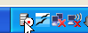 | انقر نقرًا مزدوجًا على هذا الرمز:  |
خادم MSDE الموضح هنا هو الخادم الافتراضي [PORTABLE1_TAHE] على الجهاز. تذكر أن خادم MSDE الذي قمنا بتثبيته يسمى [PORTABLE1_TAHE\MSDE140405]. نقوم بتغيير اسم الخادم في الحقل المناسب:  | إذا سارت الأمور على ما يرام، يجب أن يتم تشغيل مثيل [MSDE140405]:  |
يمكننا إجراء فحص أولي. في نفس المجلد الذي يوجد فيه [sqlmangr.exe]، يوجد عميل وحدة التحكم [osql.exe] الذي يسمح لك بالاتصال بخادم MSDE وتنفيذ أوامر SQL. أثناء التثبيت، قمنا بتعيين كلمة المرور [azerty] للمسؤول [sa] لخادم MSDE الخاص بنا. باستخدام عميل وحدة التحكم، سنقوم بالاتصال بالخادم المثبت حديثًا. إذا قمنا بتشغيل الأمر [osql -?]، فسيتم عرض قائمة بالمعلمات الممكنة:
C:\Program Files\Microsoft SQL Server\80\Tools\Binn>osql -?
utilisation : osql
[-U ID de connexion]
[-P mot de passe]
[-S serveur]
[-H nom de l'host]
[-E connexion approuvée]
[-d utiliser le nom de la base de données]
[-l limite du temps de connexion]
[-t limite du temps de requête]
[-h en-têtes]
[-s séparateur de colonnes]
[-w largeur de colonne]
[-a taille du paquet]
[-e entrée d'echo]
[-I Activer les identificateurs marqués]
[-L liste des serveurs]
[-c fin de cmd] [-D nom ODBC DSN]
[-q "requête cmdline"]
[-Q "requête cmdline" et quitter]
[-n supprimer la numérotation]
[-m niveau d'error]
[-r msgs vers stderr]
[-V severitylevel]
[-i fichier d'entry]
[-o fichier de sortie]
[-p imprimer les statistiques] [-b abandon du lot d'instruction after error]
[-X[1] désactive les commandes [et quitte avec un avertissement]]
[-O utiliser le comportement Old ISQL désactive les éléments suivants]
<EOF> traitement par lot d'instructions
Mise à l'automatic console width scaling
Messages larges
niveau d'default error -1 instead of 1
[-? description de la syntaxe]
ابدأ تشغيل الخادم [MSDE140405] كما هو موضح أعلاه، ثم في نافذة موجه الأوامر، استخدم [osql] للاتصال بالخادم [portable1_tahe\msde140405] تحت الهوية [sa, azerty]:
C:\Program Files\Microsoft SQL Server\80\Tools\Binn>OSQL.EXE -U sa -S portable1_tahe\msde140405 -P azerty
1>
تشير العلامة [1>] إلى أن [osql] في انتظار أمر. لقد تم الاتصال بنجاح. لاستخدام [osql] بشكل صحيح، يجب الرجوع إلى وثائق MSDE. وهي متوفرة في صيغ مختلفة (PDF، HTML Help، إلخ). هذه الوثائق شاملة للغاية. بشكل عام، يُفضل استخدام عميل رسومي للعمل مع قاعدة بيانات MSDE. وهذا ما يُقترح لاحقًا. للخروج من [osql]، استخدم الأمر [exit]:
سنرى الآن كيفية إنشاء قواعد بيانات على خادم MSDE المثبت حديثًا. قبل ذلك، سنقدم بإيجاز أداة تسمى [MSDE Manager] تتيح لك تغيير وضع المصادقة لخادم MSDE. في الواقع، إذا قمت بتثبيت مثل هذا الخادم باستخدام خيارات التثبيت الافتراضية، يتم تعيين وضع المصادقة للخادم على [مصادقة Windows]. لا يسمح هذا النوع من المصادقة إلا للمستخدمين الذين تم تحديدهم على جهاز Windows (ربما عبر مجال). بالنسبة لبرنامج VB.NET الذي يرغب في الاتصال بقاعدة بيانات لاستخدام محتواها، فإن هذا الوضع غير عملي. بل إنه أسوأ بالنسبة لتطبيقات Java التي تصل إلى نظام إدارة قواعد البيانات (DBMS) عبر برنامج تشغيل JDBC. في مثل هذه الحالات، يُفضل المصادقة المختلطة، لأنها تقبل أزواج اسم المستخدم/كلمة المرور المحددة في نظام إدارة قواعد البيانات (DBMS) بالإضافة إلى طريقة المصادقة السابقة. تتيح لك أداة [MSDE Manager] إجراء هذه العملية.
3.13. أين يمكنني العثور على MSDE Manager؟
[MSDE Manager] هي أداة إدارة لنظام إدارة قواعد البيانات MSDE. يمكن العثور عليها على الرابط [http://www.valesoftware.com/].
نقوم بتنزيل الإصدار المجاني من خلال اتباع الرابط أعلاه:

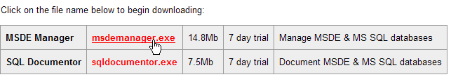
النسخة التجريبية لها مدة صلاحية قصيرة. وهذا لا بأس به لأننا سنستخدمها لمهمة واحدة محددة فقط. قم بتنزيل المنتج وتثبيته. سيتم وضع اختصار على سطح المكتب. استخدمه لتشغيل MSDE Manager. بعد النوافذ الأولية، ستصل إلى هذه النافذة:
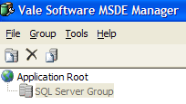
- ابدأ تشغيل خادم MSDE140405
- يجب أن تكون مسجلاً الدخول إلى جهاز Windows كمسؤول
- انقر بزر الماوس الأيمن على رابط [SQL Server Group] واختر خيار [New SQL Server Registration]:
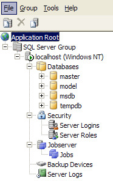
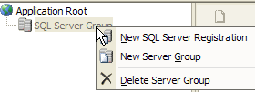
تظهر صفحة الخصائص التالية:
 |
portable1_tahe\msde140405 - اسم مثيل MSDE الذي تريد الاتصال به | |
مصادقة Windows - هذا الوضع متاح دائمًا ويسمح لمسؤول جهاز Windows بالاتصال بخادم MSDE | |
حدد مجموعة الخوادم الوحيدة المدرجة [مجموعة خوادم SQL] |
بمجرد النقر فوق [موافق]، يتم عرض شجرة الخصائص لخادم MSDE140405:
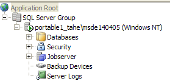
يمكننا البدء في إنشاء قواعد البيانات. لن نقوم بذلك لأننا سنستخدم منتجًا آخر، وهو نسخة مطابقة لمنتج IBExpert الذي تناولناه سابقًا. سنقوم ببساطة بتغيير وضع مصادقة MSDE. انقر بزر الماوس الأيمن على خادم MSDE140405 أعلاه واختر الخيار [Design]:

تظهر لنا نافذة المعلومات التالية:

توفر علامة التبويب [General] معلومات حول خادم MSDE الذي تتصل به. صفحة [Security] هي التي تهمنا:

هنا، يجب التأكد من ضبط وضع مصادقة MSDE على [SQL Server و Windows]. سيسمح لك ذلك بالاتصال بـ MSDE بطريقتين:
- باستخدام حساب مسؤول Windows — وهو ما تم هنا
- باستخدام حساب MSDE — حيث يُطلب عندئذٍ اسم مستخدم وكلمة مرور. هذا هو الوضع الذي يجب استخدامه في برنامج يتصل بقاعدة بيانات DBMS.
نؤكد هذا الاختيار ونخرج من MSDE Manager. لن نحتاج إليه بعد الآن. لإنشاء قواعد بيانات MSDE، سنستخدم أداة أخرى: EMS MS SQL Manager.
3.14. أين يمكنك العثور على EMS MS SQL Manager؟
EMS MS SQL Manager هي أداة رسومية مخصصة للعمل مع نظام إدارة قواعد البيانات Microsoft SQL Server، وبالتالي مع MSDE. وهي تشبه إلى حد كبير أداة IB-Expert التي تم وصفها سابقًا. وهي متاحة على الرابط [http://sqlmanager.net/] (نيسان/أبريل 2005):
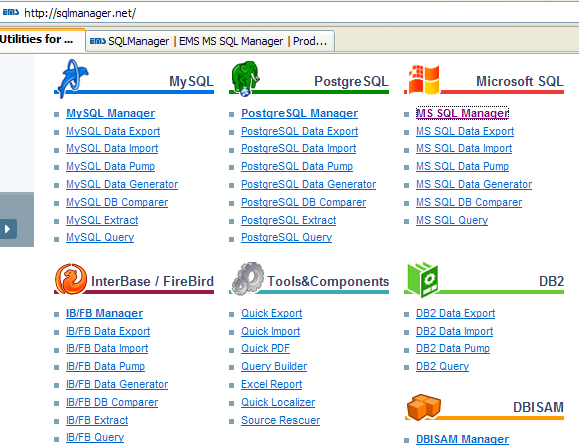
يقدم الموقع أدوات إدارة للعديد من أنظمة إدارة قواعد البيانات. اتبع رابط [MS SQL Manager]:

أعلاه، نختار الإصدار الخفيف من المنتج. قم بتنزيله وتثبيته. سيكون لديك مجلد مشابه لما يلي:

الملف القابل للتنفيذ هو [MsManager.exe]. عادةً ما يتوفر اختصار في قائمة [ابدأ]:

بمجرد تشغيله، يعرض MS SQL Manager النافذة التالية:

لنبدأ بتسجيل خادم MSDE الذي نريد العمل معه باستخدام خيار [Database/Register Host]:
 |
تعليقات:
- الخطوة 1 - كما ذكرنا، يدعم MSDE وضعين للمصادقة: Windows و SQL Server. في وضع [Windows]، يتم استخدام حسابات جهاز Windows. في وضع [SQL Server]، يتم استخدام حسابات نظام إدارة قواعد البيانات (DBMS). يمكن لـ [SQL Server] العمل في وضع [Windows] أو في وضع مختلط [Windows، SQL Server]. وضع المصادقة [Windows] متاح دائمًا. ومع ذلك، فإن وضع المصادقة المختلط ليس نشطًا دائمًا. لقد رأينا كيفية تمكينه باستخدام MSDE Manager. أعلاه، تم إجراء الاتصال باستخدام حساب مسؤول.
- الخطوة 2 - بمجرد نجاح المصادقة، يتم عرض قواعد بيانات MSDE الافتراضية. أعلاه، تم تحديدها جميعًا.
 |
تعليقات:
- الخطوة 3: يمكن اختيار خيارات الإدارة للقاعدة البيانات المحددة. هنا، تم الاحتفاظ بالخيارات الافتراضية.
- الخطوة 4: نقوم بتسجيل خادم MSDE باستخدام الزر [تسجيل]
ثم يظهر خادم MSDE في مستكشف قواعد البيانات:

دعونا نستخدم خيار [قاعدة البيانات/إنشاء قاعدة بيانات] لإنشاء قاعدة بيانات:
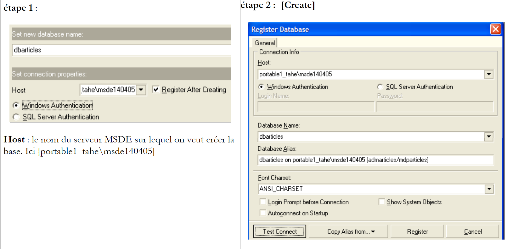 |
الخطوة 2:
عندما تظهر صفحة المعلومات هذه، يكون قد تم إنشاء قاعدة البيانات [dbarticles]. يمكنك التحقق من ذلك بالنقر فوق الزر [اختبار الاتصال]. في حقل [اسم مستعار قاعدة البيانات]، يمكنك إدخال ما تريد. هنا، قمنا بإدخال:
- اسم قاعدة البيانات
- اسم خادم MSDE الذي توجد عليه
- المستخدم [admarticles] الذي سيمتلك قاعدة البيانات هذه وكلمة المرور الخاصة به [mdparticles]. لم يتم إنشاء هذا المستخدم بعد، ولكن سيتم إنشاؤه قريبًا.
الخطوة 3:
- انقر على زر [تسجيل] لتسجيل قاعدة البيانات الجديدة في [MS SQL Server]. بعد التسجيل، تظهر قاعدة البيانات [admarticles] في قائمة قواعد البيانات. يؤدي النقر المزدوج عليها إلى عرض شجرة خصائصها.
 | 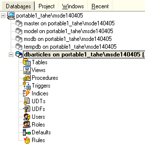 |
لنقم بإنشاء حساب تسجيل دخول جديد ليكون المسؤول عن قاعدة البيانات [admarticles].
- اختر خيار [أدوات/مدير حسابات الدخول]:

- يمكننا أن نرى أن هناك حسابين مسجلين بالفعل:
- [BUILTIN\Administrators]: يستخدم هذا الحساب مصادقة Windows. وهو يمثل مسؤولي جهاز Windows الذي يوجد عليه خادم MSDE
- sa: يستخدم هذا الحساب مصادقة SQL. بشكل افتراضي، هو المسؤول عن خادم MSDE. لاحظ أنه هنا، كما تم تكوينه أثناء تثبيت نظام إدارة قواعد البيانات MSDE، كلمة المرور الخاصة به هي [azerty].
- انقر بزر الماوس الأيمن على منطقة تسجيلات الدخول وأضف تسجيل دخول جديد:
 |
- يظهر نموذج نحدد فيه خصائص تسجيل الدخول الجديد:

- اسم المستخدم: admarticles
- كلمة المرور: mdparticles
- بمجرد النقر على زر [OK]، يعرض MS Manager استعلامات SQL التي سيقوم بتنفيذها:

لغة SQL الموضحة أعلاه هي Transact-SQL، وهي لغة SQL التي يستخدمها MSDE. نقوم بتنفيذ هذا الرمز بالنقر فوق [OK]
- يتم إضافة تسجيل الدخول الجديد إلى قائمة تسجيلات الدخول:

- في نافذة خصائص قاعدة البيانات [dbarticles]، انقر بزر الماوس الأيمن على [users] لإنشاء مستخدم يتمتع بأذونات على قاعدة البيانات [dbarticles]:
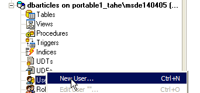
- ثم تظهر النافذة التالية:

- في القائمة المنسدلة [Login]، سترى قائمة بتسجيلات الدخول الموجودة. حدد تسجيل الدخول [admarticles].
- في [Name]، أدخل اسم مستخدم. يمكن ربط عدة مستخدمين بنفس اسم المستخدم. أيضًا، في MSDE، يتطلب إنشاء مستخدم أولاً إنشاء اسم مستخدم. تبدو لوحة [User] الآن كما يلي:

- الآن دعنا ننتقل إلى لوحة [Member Of]، والتي ستسمح لنا بتحديد أذونات المستخدم:

- أنا لست مستخدمًا منتظمًا لـ MSDE ولست متأكدًا من المعنى الدقيق لكل دور من الأدوار المدرجة في الجزء الأيسر. دور [db_owner] يبدو مغريًا (owner = owner). لذلك سنختاره لمستخدمنا [admarticles]:
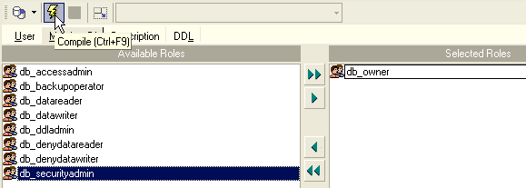
- نؤكد اختياراتنا بالنقر فوق الزر [Compile] أعلاه. استعلامات SQL التي تم تنفيذها هي كما يلي:

- نقوم بتجميعها بالنقر فوق [OK]. لدينا الآن مستخدم لقاعدة البيانات [dbarticles]:

- الآن لنقم بإنشاء جدول. انقر بزر الماوس الأيمن على [Tables] واختر خيار [New Table]. سيؤدي ذلك إلى فتح نافذة تعريف خصائص الجدول:

- لنبدأ بتسمية الجدول [ARTICLES] باستخدام حقل الإدخال [Table Name]. بعد ذلك، انتقل إلى لوحة [Fields]:

- حدد الحقول التالية:

لن يتم إنشاء الجدول حتى ننتهي من "تجميع" تعريفنا. استخدم زر [Compile] أعلاه لإنهاء تعريف الجدول. يقوم [MS SQL Manager] بإعداد استعلامات SQL لإنشاء الجدول ويطلب التأكيد:

ومن المثير للاهتمام أن [MS SQL Manager] يعرض استعلامات SQL التي نفذها. وهذا يتيح لك تعلم لغة Transact-SQL. يقوم زر [Commit] بالتحقق من صحة المعاملة الحالية، بينما يقوم زر [Rollback] بإلغائها. هنا، نقبلها بالنقر فوق [Commit]. وبمجرد الانتهاء من ذلك، يضيف [MS SQL Manager] الجدول الذي تم إنشاؤه إلى شجرة قاعدة البيانات لدينا:

بالنقر المزدوج على الجدول، يمكننا الوصول إلى خصائصه:

تسمح لنا لوحة [Checks] بإضافة قيود تكامل جديدة إلى الجدول. بالنسبة لجدول [ARTICLES]، سننشئ القيود التالية:
- يجب أن تكون الحقول [ID، PRICE، CURRENTSTOCK، MINIMUMSTOCK] >=0
- يجب ألا يكون الحقل [NAME] فارغًا
في لوحة [Checks]، انقر بزر الماوس الأيمن على المنطقة الفارغة لإضافة قيد جديد [New check]:

- تبدو ورقة تحرير القيد كما يلي:
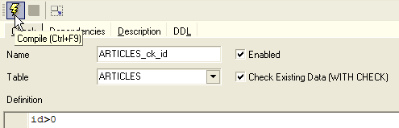
الاسم: اسم القيد
الجدول: الجدول الذي ينطبق عليه القيد
التعريف: تعبير القيد
يتم ترجمة القيد باستخدام الزر [ترجمة] أعلاه.
- مرة أخرى، يعرض [MS SQL Manager] أوامر SQL التي تم تنفيذها:

- نقوم بالتحقق من صحتها باستخدام الزر [Commit] (غير معروض). إذا عدنا إلى لوحة [Checks] الخاصة بالجدول [ARTICLES]، يظهر القيد الجديد:
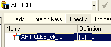
- نقوم بتعريف القيود الأخرى بنفس الطريقة لنحصل في النهاية على القائمة التالية:

بمجرد الانتهاء من ذلك، افتح لوحة [DDL] الخاصة بجدول [ARTICLES]:
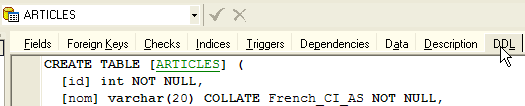
تعرض هذه اللوحة كود Transact-SQL لإنشاء الجدول مع جميع قيوده. يمكنك حفظ هذا الكود في نص برمجي لتشغيله لاحقًا:
CREATE TABLE [ARTICLES] (
[id] int NOT NULL,
[nom] varchar(20) COLLATE French_CI_AS NOT NULL,
[prix] float(53) NOT NULL,
[stockactuel] int NOT NULL,
[stockminimum] int NOT NULL,
CONSTRAINT [ARTICLES_uq] UNIQUE ([nom]),
PRIMARY KEY ([id]),
CONSTRAINT [ARTICLES_ck_id] CHECK ([id] > 0),
CONSTRAINT [ARTICLES_ck_nom] CHECK ([nom] <> ''),
CONSTRAINT [ARTICLES_ck_prix] CHECK ([prix] >= 0),
CONSTRAINT [ARTICLES_ck_stockactuel] CHECK ([stockactuel] >= 0),
CONSTRAINT [ARTICLES_ck_stockminimum] CHECK ([stockminimum] >= 0)
)
ON [PRIMARY]
GO
حان الوقت الآن لإدخال بعض البيانات في جدول [ARTICLES]. للقيام بذلك، استخدم لوحة [Data] الخاصة به:

يضيف الزر [+] صفًا، ويزيل الزر [-] صفًا. يتم إدخال البيانات ببساطة عن طريق الكتابة في حقول الإدخال لكل صف في الجدول. يتم التحقق من صحة الصف باستخدام الزر [Post Edit] أدناه:

لنقم بإنشاء عنصرين:

يتيح لك [MS SQL Manager] تشغيل استعلامات SQL عبر خيار [Tools/Show SQL Editor] أو [F12]. يمنحك هذا إمكانية الوصول إلى محرر استعلامات SQL متقدم حيث يمكنك تشغيل الاستعلامات. يتم حفظ الاستعلامات، لذا يمكنك العودة إلى استعلام قمت بتشغيله مسبقًا. إليك مثال على ذلك:

قم بتنفيذ استعلام SQL باستخدام الزر [Execute] أعلاه. ستحصل على النتيجة التالية:

سنوقف عروضنا التوضيحية هنا. إن تركيبة [MS SQL Manager - MSDE]، تمامًا مثل تركيبة [IBExpert - Firebird]، ممتازة أيضًا لتعلم قواعد البيانات.
3.15. إنشاء مصدر ODBC [MSDE]
عادةً ما يتم تثبيت برنامج تشغيل ODBC لـ SQL Server بشكل افتراضي على أجهزة Windows.
- قم بتشغيل الأداة [ابدأ -> إعدادات -> أدوات التكوين -> أدوات الإدارة -> مصادر بيانات ODBC]:
- تظهر النافذة التالية:
- انقر فوق [إضافة] لإضافة مصدر بيانات نظام جديد (في جزء [DSN النظام]) سنربطه بقاعدة بيانات MSDE التي أنشأناها في القسم السابق:

- أولاً، نحتاج إلى تحديد برنامج تشغيل ODBC الذي سنستخدمه. أعلاه، نختار برنامج التشغيل لـ [SQL Server] ثم نضغط على [إنهاء]. بعد ذلك، يتولى معالج برنامج تشغيل ODBC لـ [SQL Server] المهمة:

- نقوم بملء الحقول المختلفة:
اسم مصدر ODBC — يمكن أن يكون أي شيء | |
يمكن أن يكون أي شيء | |
اسم خادم MSDE الذي يحتوي على بيانات مصدر ODBC |
- انقر فوق [التالي] لتقديم معلومات إضافية:

- املأ الحقول المختلفة:
حدد أنك ستتصل بمصدر بيانات ODBC باستخدام اسم مستخدم مسجل على خادم MSDE | |
تسجيل دخول المستخدم | |
كلمة مرور المستخدم |
- لاحظ أن هذه هي المرة الأولى التي نستخدم فيها المستخدم (admarticles، mdparticles) الذي تم إنشاؤه في قسم سابق. انقر على [التالي] مرة أخرى للانتقال إلى الشاشة التالية:

- نقوم بملء الحقول المختلفة:
نختار قاعدة البيانات [dbarticles] لتكون قاعدة البيانات الافتراضية للمستخدم [admarticles] |
- انقر على [التالي] للانتقال إلى الشاشة التالية:

- نقبل القيم الافتراضية ونضغط على [إنهاء]. يتم عرض ملخص لخصائص مصدر ODBC الذي سيتم إنشاؤه:
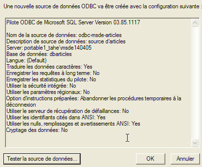
- يتيح لنا زر [اختبار مصدر البيانات] التحقق من صحة معلوماتنا. تحقق من أن MSDE قيد التشغيل، ثم اختبر الاتصال:

- نحن الآن على يقين من أن الزوج [admarticles, mdparticles] قد تم التعرف عليه.
لإجراء مزيد من الاختبارات، يمكن للقارئ اتباع الإجراء الموضح في القسم 3.10.
3.16. سلسلة الاتصال بقاعدة بيانات MSDE
- قم بتشغيل Visual Studio وافتح مستكشف الخادم [عرض/مستكشف الخادم]:
|
- انقر بزر الماوس الأيمن على [اتصال البيانات] واختر خيار [إضافة اتصال]:

- في جزء [الموفر]، حدد أنك تريد استخدام مصدر SQL Server، ثم انتقل إلى جزء [الاتصال]. لاحظ أننا لا نستخدم برنامج تشغيل ODBC هنا.

اسم خادم MSDE الذي تتصل به | |
اسم المستخدم الذي سيتم استخدامه للاتصال بقاعدة البيانات | |
كلمة المرور المرتبطة باسم المستخدم هذا | |
قاعدة البيانات التي تريد العمل بها |
يتيح لك زر [اختبار الاتصال] التحقق من صحة المعلومات:

- أكد المعالج بالنقر فوق [موافق]. ومن الغريب أن نافذة جديدة تطلب تفاصيل الاتصال:

- أدخلها مرة أخرى وانقر على [موافق]. ثم يظهر مصدر البيانات في نافذة [مستكشف الخادم] في Visual Studio:

- بالنقر المزدوج على الجدول [ARTICLES]، يمكنك الوصول إلى بيانات الجدول:

- إذا نقرنا بزر الماوس الأيمن على الرابط [portable1_tahe\msde140405.dbarticles.admarticles] في جزء [مستكشف الخادم] واخترنا الخيار [خصائص]، يمكننا عرض خصائص الاتصال:
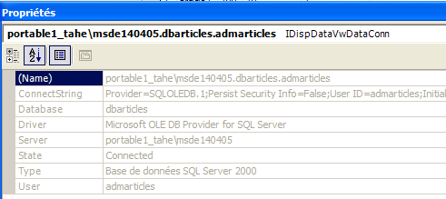
- تعد [ConnectString] خاصية مهمة يجب معرفتها لأن كود .NET يحتاجها لفتح اتصال بالقاعدة البيانات. هنا، سلسلة الاتصال هي:
Provider=SQLOLEDB.1;Persist Security Info=False;User ID=admarticles;Initial Catalog=dbarticles;Data Source=portable1_tahe\msde140405;Use Procedure for Prepare=1;Auto Translate=True;Packet Size=4096;Workstation ID=PORTABLE1_TAHE;Use Encryption for Data=False;Tag with column collation when possible=False
تحتوي العديد من عناصر سلسلة الاتصال هذه على قيم افتراضية. وستكفي سلسلة الاتصال التالية: